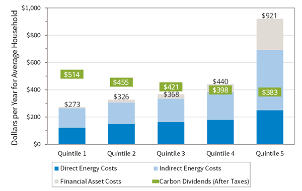
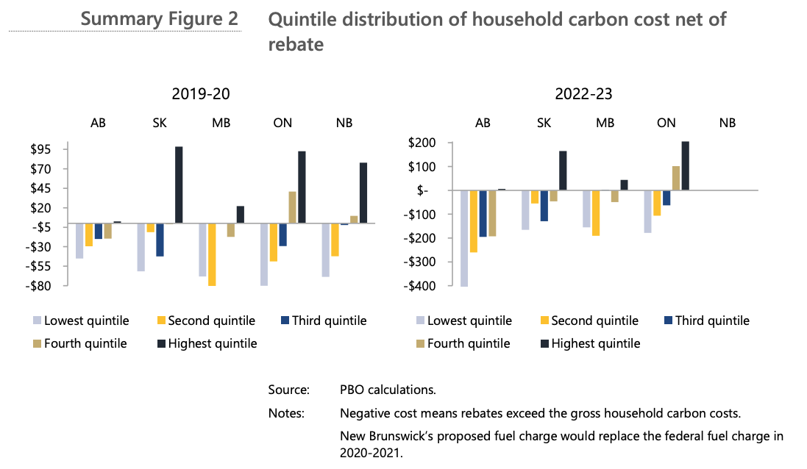
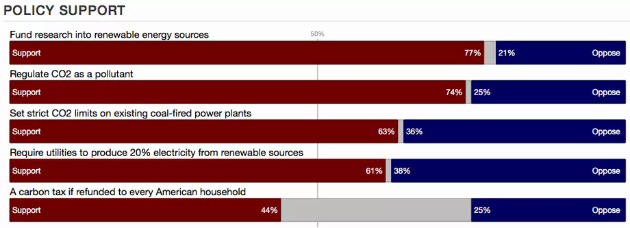
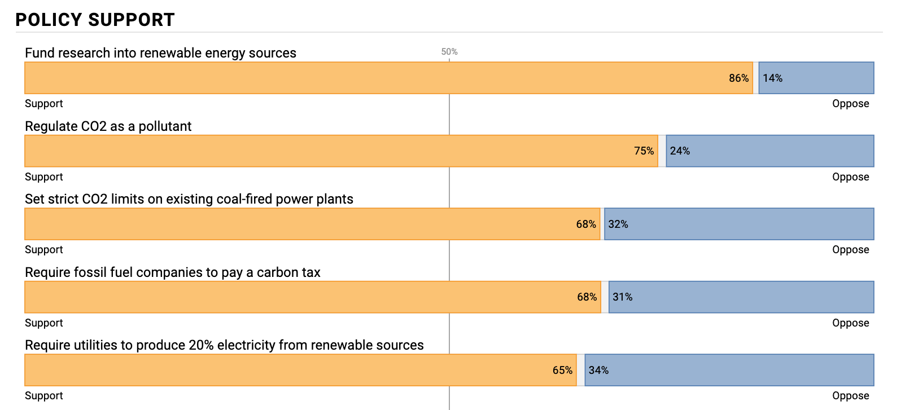

Carbon Pricing and its Progressive Discontents
Written by Steven Chun
Published on 24 January 2021
I am worried about progressive perceptions of carbon pricing.
But first, a word from our sponsor.
“A carbon tax is the most straight-forward and efficient strategy for quickly reducing greenhouse gas emissions” - Senator Bernie Sanders (D-VT)This quote is from his 2014 op-ed in the HuffPost . Senator Sanders’ had previously proposed a bill that priced carbon emissions at $20 a ton, and returned 60% of the income to Americans.
Thank you Senator Sanders! Stay warm out there.
Like I said, I am worried about progressive perceptions of carbon pricing. It used to be the policy issue that could get Bernie Sanders and John McCain rubbing ideological elbows, but no more, and not because conservatives left the table. As carbon pricing has gained purchase with moderate conservatives , it seems to have lost even more among progressives.
Some evidence for my concern:
I.
At the start of this essay, I quoted Bernie Sanders’ full throated support of a carbon tax. That was 2014. Two years later, Senator Sanders hammered Hillary Clinton in primary debates for her reticence to back a carbon tax. And then after losing the nomination, he semi-successfully lobbied to give emissions pricing a mention in the party platform. And then the 2020 Democratic primary rolled around and…nothing? His campaign was completely silent on emissions pricing. No mention of it in his 14,000+ word climate plan .
II.
Whenever discussion around a Green New Deal gets into specifics, some of its supporters seem to lightly chafe against emissions pricing, usually by omission but sometimes outright.
For example, HR 109 and SR 59 , the pair of congressional resolutions which establish the spirit of the Green New Deal, don’t mention any form of emissions pricing. Critiques of the language of these resolutions have been met with the gentle reminder that they’re resolutions, not specific plans. They’re meant to establish urgency and vision, not get into details.
And yet, into detail they get! Surely if “‘smart’ power grids” and “proven low-tech solutions that increase soil carbon storage, such as land preservation and afforestation” are not too granular to mention, something as simple as a price on carbon might merit a bullet point?
This is especially true as carbon pricing schemes that direct their revenue towards green investments or return them to Americans as checks fit very well into the key insight of the Green New Deal: to focus not on obscure climate policy, but on tangible markers of prosperity like jobs and growth.
Likewise, the Sunrise Movement gets a lot of press as a prominent, young advocacy group who’ve basically staked their entire platform on the principles laid out in HR 109. They don’t seem to prioritize carbon pricing much. For example, their 2020 Democratic primary scorecard chiefly rated candidates on how their climate plan aligned with the tenets of a Green New Deal. Out of the many specific policy dimensions candidates were ranked against, no mention of emissions pricingActually, they did have one dimension in the “How They Talk About It” section: “Proposes solutions beyond taxes and regulation” which seems…kind of anti-carbon-pricing? Warren and Sanders got 4/4, Biden got 2/4. Out of those three, Biden is the only to openly support carbon pricing . Warren is “open to it” and Sanders is a no. The analysis on Biden’s score was that his “plan relies heavily on market-mechanism solutions such as tax incentives and regulations” while Senator Warren’s plans are “are not unduly limited to reliance on traditional market mechanisms” and Senator Sanders’ “plans rely heavily on direct investment and direct intervention at the federal level through a total of $16.3 trillion of federal funding.”.
III.
There’s fatigue from weak and byzantine carbon pricing schemes like California’s cap-and-trade system . And there’s a wariness among the progressive left towards anything market based in general.
Congresswoman Ocasio-Cortez captures this mix of fatigue and anti-market sentiment pretty well, tweeting ,
For far too long, ideas like a carbon tax or cap-and-trade were touted as the premier solutions to climate change.
— Alexandria Ocasio-Cortez (@AOC) February 10, 2019
While those things could be *part* of a solution, the GND resolution says they are inadequate as the whole answer.
The pipes in Flint weren’t a “market failure.”
It is a long road from Bernie Sanders’ centerpiece climate policy to “could be part of a solution”. Bewilderingly, this fall from grace is set against a backdrop of consistent support from the scientific and economic communities .
I think this is not good. In moving away from emissions pricing, we are discarding one of our most valuable tools, not just for combating climate change, but for building the political will needed for the fight.
In the following, I’ll make the case that emissions pricing—in the form of a carbon dividend—is good policy, in a climate sense, in a progressive sense, and in a political economy sense. This is true for two reasons:
- At the very least, a carbon dividend can be thought of as a wealth transfer from the fossil fuel industry and the wealthy to low and middle income households, and one that also reduces emission by anywhere from a little to a lot.
- There is no better policy for getting people invested in climate change than to compensate them directly for the damage fossil fuels are doing to their world.
We should establish common ground on what a modern plan for carbon pricing looks like. The state of the art has moved well past cap-and-trade systems, and real-world data from other countries is giving us a better idea of what works and what doesn’t.
What is Emissions Pricing?
Vast oceans of argument rise or fall on fairly technical policy choices, so we want to be precise here. The more correct term is probably emissions pricing, as what we’re talking about is raising the cost of emitting a whole host of greenhouse gasesFor example, we want it to be very expensive to emit methane, which the IPCC highlights as a critical target for reduction., but because of carbon’s existence as a shorthand for many pollutants, I’ll use emissions and carbon pricing interchangeably.
There are many policies that fall under emissions pricing. For example, California has a cap and trade policy, which sets a cap on statewide emissions and then lets companies trade permits that represent their slice of the emissions pie. In a somewhat roundabout way, this effectively sets a price on carbon. However, for a myriad of reasons, cap and trade is really hard to get right , especially with the ever present lobbying of Oil and Gas. Another common policy is a carbon tax, though for reasons we’ll get to, it has some politically pernicious effects. What I describe in the following paragraphs are the fundamentals of a carbon dividend, a radically effective approach to emissions pricing.
I.
First and foremost, emissions pricing is not a cure-all. But it sits at the heart of pretty much everything.
Climate change is a many-headed hydra. We needNon-exhaustive list incoming, but loosely sourced from some of the top solutions from Project Drawdown . reliable, renewable energy at a competitive price, we need to reduce emissions from agriculture, transit, housing, and refrigeration, and at the same time, keep people fed, employed, housed, and cool in ever-hotter summers. And while the suburban homeowner might be the first to install solar panels and better insulation, she’ll fight you on density and transit. And while France promises to decarbonize, her former colonies, reliant on colonially-imposed, export-oriented monocultures, have inherited colonialism’s plunderous economic model.
No, there is no silver bullet for this. But there is a common thread. It is cheap to emit. But emission itself is not cheap—hurricanes and wildfires supercharged by a changing climate are testament to that. This disparity underlies virtually all the facets of the climate crisis. The suburbs can sprawl, because it is cheap to drive everywhere and heat huge homes. We can have our grass-fedGrass fed cows produce more methane over their lifetime than feedlot cows since they take longer to grow to full size. However, the grasslands they graze on sequester a lot of carbon. So if you’re creating or preserving grass for the cows, grass-fed might actually emit less. But, if the grasses were already going to be there, grass-fed seems worse. It’s not super clear. steaks and eat them too, because California wildfire victims don’t get to collect on cow burpsThey do, however, get to collect on Pacific Gas & Electric, whose equipment started the fire. Except, that’s really expensive, so PG&E goes bankrupt. And as part of that bankruptcy, they agree to pay the wildfire victims with shares of PG&E. On this topic, Bloomberg’s Matt Levine writes, “In the ordinary course, the way U.S. bankruptcy and corporate law works is that if a company owes people more money than it can pay, those people get to own the company instead. Thus, if a company does bad enough things to enough people, the remedy is that those people end up owning the company.” Except, not starting wildfires as a power company in California is pretty hard, and so it’s pretty likely that PG&E, who is now actually just the victims of last year’s wildfire, will get sued by the victims of this year’s wildfires. “The rule is the rule: If you own a company and it does a lot of harm, you have to give the company to the people it harmed, even if you only own the company because you’re one of the people it previously harmed.”.
Like, the cost of a cross country flightNew York to SF is about a ton of CO2 per person . The global average total footprint is around 5 tons. is partly a big plane and some jet fuel and some complementary cranberry juice, but also a lot of it is the cost of jet fuel emissions to the world and everyone on it whose lives will be made materially worse. But the actual price tag only incorporates the former. This leftover, the amount everyone is worse off, is often called the social cost of carbon. If you add up this difference—between the price on paper and the price including the social cost—for all sorts of goods and services, across all sorts of industries in the U.S., you get $649 billion dollars .
One way to think about this is that it’s a subsidy that you’re paying to the fossil fuel industryAnd friends.. Say Exxon drills some untapped oilfield, the burning of which will make every year of your life, say, on average $200 worse. Maybe your grocery or utility bill goes up, or your home is washed away. Usually, if the factory next door gives everyone cancer, you can go to the U.S. court system and they’ll be like, “alright, you have to pay these people’s hospital bills and then some because you gave them cancer.” You can’t do that with climate change!I mean, of course, this is America, people have tried to sue . But it never works. And so every year you’re writing a check to Big Oil that says “I don’t mind the bad things that happened to me because of you, also here’s some money” to help subsidize ruining your children’s futuresNot that you want to! It’s just, you don’t really have any other option.. Globally, this is happening to the tune of $4.7 trillion.
What if we fixed that? What if we stopped subsidizing fossil fuels and priced things in proportion to the damage they do to the climate? Bad things would be more expensive, and people would do them less. That’s emissions pricing. You add on some fee, which makes things like gasoline expensive, and so people drive lessMore accurately, the cost of driving accurately internalizes the climate change induced damage you’re causing.. In economics, this is considered a “first-best” solution because it gets at the core of the problem, the price of emission, whereas something like a fuel efficiency regulation pulls on a lever that’s related but not the actual distortion itselfPlus, regulations are hard to get right without inducing some perverse incentive. For example, it’s extremely clear that increasing usage and size of SUVs and pickup trucks are large parts of the US’s insane pedestrian fatality rate. Truck makers, and apparently truck buyers, want mean lookin’ trucks. This usually means making the grill taller, a purely aesthetic change. This makes the truck 2-3 times more likely to kill a pedestrian if it hits one. Instead of rolling a victim onto the hood and windshield, these grills instead ensure that the victim is actually run over by the wheelbase. There’s another incentive, outside of looks, driving ever larger vehicles, particularly bigger trucks: Corporate Average Fuel Economy regulations. Designed to cut emissions and encourage more efficient cars, CAFE sets a minimum fuel efficiency based on a car’s wheelbase. The larger the wheelbase, the looser the restriction. CAFE is even easier on trucks, despite the fact that most trucks are just used as passenger vehicles. And so trucks keep getting bigger, more dangerous, and easier on carmaker’s CAFE targets..
But beyond affecting the price of gas, you also now have a price for keeping carbon in the ground. For example, trees store carbon. When you cut them down, they no longer store carbon (and if you burn them, as is common in deforestation, you actually release all the stored up carbon). So if you could crediblyI say credibly because this sort of thing, often under the umbrella of “carbon offsets”, runs into the fundamental problem of causality. You need to show that without your hard work, the carbon would have been emitted (e.g. tree chopped down). This is technically impossible to know, and practically easy to bullshit . An airline buys a large swatch of forest that wasn’t going to get cut down to start with and claims that it has saved the forest and kept carbon in the ground. It then goes and tells its customers their flights are being offset. stop some deforestation, you’ve stopped X tons of carbon from being released and thus are owed X times the price of carbon by society for your good deed. This actually happens: Norway paid Indonesia $56 million to cut down fewer trees , and estimates say emissions pricing could drastically reduced deforestation It’s worth noting that while forests get a lot of the spotlight, peatlands are actually the world’s largest terrestrial carbon store , storing twice as much carbon as the world’s forests combined. This makes it critical to keep them wet, as a warming climate has started to dry them out, which turns them from carbon sinks to carbon sources.. As another bonus, renewable energies and public transit gain large price advantages over their dirty alternatives.
The price matters a lot. If you don’t set it high enough, maybe because corporate lobbyists had their way, you don’t see the emissions reductions you want because you’ve undershot the real social cost of carbon. The IPCC puts an ideal price in 2030 at over a hundred dollars, but studies show that even lower prices, in the $24 range for example, have large effects . Another key component in most pricing schemes is that every year the price goes up, and even if you started low, by 2030 you might have eased into a carbon price possibly exceeding a hundred dollarsThere’s some argument that we have this backward, that we should actually start high and then lower, to account for the fact that we’ll have more certainty about climate outcomes the farther we go into the future. This is interesting, but the consensus still seems to be to start low, and political considerations kind of rule out an initial price of $100..
Okay, so who actually pays the fee? What does this look like? Generally, the simplest way is to place the point of taxation as far up the energy supply chain as possible, so you have to measure and collect from fewer people. So the people who end up paying the fee are oil refineries, coal producers, that sort of thing. These businesses then raise the cost of, like, coal, which raises the cost of electricity, which will be reflected in your utility bill. But the pass through rate, the portion of the carbon fee that’s passed onto consumers in the form of higher prices, isn’t 100%. Estimates put the pass through rate as low as 70% , meaning consumers see even less effect.
II.
How you use the revenue from emissions pricing matters. A lot. Not to the climate, but to its political feasibility and general popularity. You’ll notice I’ve avoided using “carbon tax” too much. People don’t like taxes. They don’t trust governments to spend them well. Attempting to pass legislation like this would be a bad time. In fact, Klenert et al. (2018) attributes some part of the success of Alberta’s carbon “levy” to its branding. Like, we might be better off trying to sell the American public on a Carbon Tithe™.
Luckily, there’s a way around all of this. A growing consensusAgain, see Klenert et al. 2018 for an excellent survey of carbon pricing schemes. Virtually all successful policies involve some significant dividend to citizens, though some also include green investment and subsidies to trade-exposed industries. has settled on a carbon dividend: place a fee on emissions and return all the money as a check to every AmericanMinus maybe the administrative fees of the program, so it’s truly revenue neutral..
It’s almost poetic in its simplicity. After all, it’s everyones’ world that’s getting hotter, shouldn’t those responsible be forced to compensate…everyone? We avoid the polarized issue of government spending. Everyone gets a check.
The best part? The vast majority of Americans would make more from the carbon dividend than they would pay in, say, increased gas prices.
III.
A carbon dividend disproportionately benefits the poor and middle class.
Typically, when you tax something like gasoline, which is commonly used across all income levels, you worry about the disproportionate impact on the poor. Relatively speaking, for someone making $25,000 a year, the same increase in the price of gas eats up a lot more of their income than for someone making $250,000. Rich people drive more, but they don’t drive that much more. So, if you worried about a carbon dividend being regressive, good—that’s the right instinct.
Luckily, the dynamics of a carbon tax are radically different than that of a gasoline tax. The rich emit a lot of carbon–disproportionately more than the poor or middle income. So even though things like heat and gas bills are a larger portion of your household costs if you’re poor, the carbon dividend you get outweighs the increased costs you see. Here’s a cool graph from the Citizen’s Climate Lobby:

Comparison of Year 1 household costs from carbon fee with Year 1 carbon dividends. Direct energy is gasoline, electricity, and home heating. Indirect energy is embodied energy in all other purchases. Financial asset costs accrue from carbon costs incurred by businesses and passed back to owners. Carbon dividends are net after personal income tax.
So unless you make more than ~$130,000The upper limit of the 4th income quintile in the United States, according to the Tax Policy Center . and, this is important, burn carbon like someone who makes $130,000, you’re going to be better off. Even if you make more than that, things like living in a city with roommates and taking public transit mean you’re spending less on carbon intensive things and are less exposed to carbon price volatility.
This estimate is in line with evidence we’re seeing from other countries’ carbon pricing schemes. Here’s Canada’s Office of the Parliamentary Budget OfficerLike our Congressional Budget Office (CBO), often abbreviated the same (the PBO), except it’s the Office of the Parliamentary Budget Officer, haha, like they say “the CBO released a report…” they really mean that the Budget Officer herself released a report. It all just makes me think that there exists one incredibly overworked Canadian employee doing all fiscal and economic forecasts for the entire country., their independent fiscal analysis people (person?), on the household impacts of their 2019 $20 per tonne carbon levy Which will increase $10 a year until $50 per tonne.:

Results for Alberta, Saskatchewan, Manitoba, Ontario, and New Brunswick by household income quintiles.
So we can pretty convincingly lay the spectre of regressiveness to rest. A carbon dividend helps the poor and middle class.
IV.
A carbon dividend works. It greatly reduces emissions.
According to Columbia University’s Center on Global Energy Policy, a carbon tax alone would meet and then exceed our commitments to the Paris Agreement. Estimating the impact of the Energy Innovation and Carbon Dividend Act (EICDA), a bill currently in the House and Senate, they say:
“GHG emissions decline substantially. Compared to 2005 levels, implementing EICDA as a stand-alone policy leads to economy-wide net GHG emissions reductions of 32–33 percent by 2025 and 36–38 percent by 2030. These emissions reductions exceed the targets in the EICDA proposal through 2030 and exceed the US commitments to the Paris Agreement over this period. Most of the near-term emission reductions occur in the power sector, where emissions fall 82–84 percent by 2030.”“
But we don’t need to rely on forecasts, Andersson (2019) performs a causal analysis of the effect of a carbon taxThe initial price in 1991 was $30 per ton. Now, it’s $137 per ton, the highest price in the world. Sweden implemented in the 90s(!)Using the synthetic control method, the very same method we discussed in Bayesian Synthetic Controls for Market Goofs !! on transportation emissions and finds:
“This quasi-experimental study is the first to find a significant causal effect of carbon taxes on emissions, empirically analyzing the implementation of a carbon tax and a value-added tax on transport fuel in Sweden. After implementation, carbon dioxide emissions from transport declined almost 11 percent, with the largest share due to the carbon tax alone, relative to a synthetic control unit constructed from a comparable group of OECD countries. Furthermore, the carbon tax elasticity of demand for gasoline is three times larger than the price elasticity. Policy evaluations of carbon taxes, using price elasticities to simulate emission reductions, may thus significantly underestimate their true effect”
In terms of the somewhat popular “listen to scientists” rhetoric, I mean, I get that “listen to the economists” doesn’t have the same ring to it as “listen to the atmospheric scientists”. But for what it’s worth, economists of every stripe really think we should have a carbon dividend . Also, I’d wager most atmospheric scientists think we should too.
If you want a concrete image of what all this might look like as law, the Energy Innovation and Carbon Dividend Act implements basically all these ideas. This essay isn’t about any one particular carbon pricing proposal, but as it stands, the EICDA seems pretty comprehensiveI have some strong reservations about the pause it places on EPA certain regulations, a gift to engender Republic support no doubt, but they have a talking point that addresses this .. If you want something tangible, start there.
In summary, a dead simple but incredibly effective carbon tax would look like
- A price around $50 per ton, though prices between $15-30 are still likely more effective than any existing or proposed carbon policy.
- 100% of the revenue after administrative costs returned to Americans.
- Border adjustments, to maintain trade competitiveness. I haven’t mentioned these mostly because it’s a boring detail, but the idea is you tax imported goods and refund exported goods. This makes it so domestic companies don’t go out of business just because some foreign company doesn’t have to pay a carbon fee.
Arguments Against
While opposition to emissions pricing might be hard to put a finger on at the national level, existing more in subtle omission than any overt statements, there are of course some fairly loud voices in outright opposition to emissions pricing. Two fundamental arguments come out of this: first, that the burden falls on working families, and second, that it can’t work politically.
Center-left reservations tend to focus on the first issue. In “ The Problem with Putting a Price on the End of the World ” for The New York Times, David Leonhardt writes,
“But if the idea’s straightforwardness is its great economic advantage, it has also proved to be its political flaw. Energy, for utilities and transportation, is a major cost of living. And across the industrialized world, the middle class and the poor have been struggling with slow income growth. As [William] Nordhaus acknowledged in his speech, curbing dirty energy by raising its price “may be good for nature, but it’s not actually all that attractive to voters to reduce their income.”
The timing of Nordhaus’s Nobel Prize highlighted this political problem. While he was onstage, demonstrators in France were marching against gas-tax increases in raucous protests — the so-called yellow-vest movement — that shut down the Louvre and the Eiffel Tower. This is “the ultimate challenge” that Nordhaus was describing. Climate change may be an existential crisis, but in their day-to-day lives, many people are more worried about the problems created by the most obvious solution than by climate change itself.”
Leonhardt goes on to mention Canada’s carbon dividend and the “ Economists’ Statement on Carbon Dividends ”, but addresses it only so far as to point out that Canadian conservatives continue to fight bitterly against it.
I’ve already spilt a lot of ink attempting to convince you that a carbon dividend is a progressive policy that helps low and middle income households. As far as I can tell, no one disagrees with that. That makes Leonhardt’s concerns a non-issue.
Farther leftAlong the publication political spectrum, that is. The authors’ own political stances may not at all map to their respective publications, and I mean, like if anyone from the Times or Jacobin or Field & Stream wants me to write something, my email is doooowwwwwn below., in “ It’s Time to Abandon Carbon Pricing ” for JacobinI’m honestly not sure what Jacobin’s rep is these days, but it had a lot of anti-carbon-tax pieces so I’m sourcing it., Jessica F. GreenProfessor Green has a new meta-analysis of carbon policies you can read here that comes to dour conclusions about the actual emissions reductions from carbon pricing efforts. It’s an excellent summary, but admits to being a grab-bag of different pricing schemes, virtually none of which are serious carbon dividends, and most of which come in under $10 a ton. So, it doesn’t shed a lot of light on what we stand to gain with a well-designed carbon dividend. writes
“Others will say: we need an “all of the above” policy. We shouldn’t take anything off the table given the urgency of the climate crisis. This pernicious logic — that incrementalism will always help — is now part of the problem. A carbon price of $15 or $20 a ton does little to actually reduce emissions — and it either inspires false optimism (“We’re doing something about climate change!”) or sows further opposition (“Why should I pay more?”). Neither helps.”On the claim of “False Optimism”: This comes up all the time in discussions about climate change, but I don’t think this is how anyone thinks about climate change. If you’re a climate expert, or a policy person advised by experts, you’re sufficiently aware of the existential threat of climate change that you can’t really relax until net zero. If you’re a climate denier, you’re a climate denier. And the median voter’s feelings aren’t really affected by incremental policy. No one thinks “well, with a $15 price on carbon and the year over year increase in renewables, I have decided that we’ve done just enough on climate and we can lay off now”. Like, Republicans don’t worry about incremental government spending cuts reducing their base’s zealotry for fiscal conservatism. “Well if we only reduce the deficit by a little, people will become complacent about fiscal discipline”, says no Republican ever. That’s just not how people form their views. My guess is that the average person who’d like to see more done about climate change believes so not out of some self-authored analysis, but from cultural identification with virtues of protecting the environment and listening to scientific expertise. This identification isn’t dimmed by incremental policy, heck it might be amplified by it—I mean think about recycling, which is basically a lie , but gets people thinking about their impact on the environment.
This is basically the political willpower argument, since low carbon prices are primarily the result of intense opposition, public or corporate. Again, this concern is partly addressed by a carbon dividend. Money to households leads to public support leads to political willpower leads to being able to pass higher carbon prices. As long as that causal chain holds, we do a lot to assuage these political economy concerns.
However, the political economy arguments for a dividend are where I’m most uncertain. The political mechanism of checks in the mail seems to hold water, but the evidence is far from concrete.
David Roberts—former Vox writer, now runs a Substack newsletter called Volts —has one of the few analyses of the political economy of emissions pricing that gives a serious treatment to a carbon dividend, and he comes away with slight reservations.
“It makes sense in the abstract. Who wouldn’t love getting checks? But the real world offers no examples of dividends being used to successfully muster support for a carbon tax. Boyce and Howard both call for a grassroots movement (the underpants gnome of all dividend arguments), but there is, to my knowledge, no evidence that dividend schemes would elicit much public support, much less a movement.”
He points to polling data, including this 2014 polling data collected by the Yale Program on Climate Change Communication (YPCCC).

Notably, the only policy under 50% is a carbon dividend.
Here’s the same chart from the 2020 version of the same poll.

Source: Yale Climate Communication
Basically everyone who was neutral on the idea of a carbon tax decided they were for it. Unfortunately, the question wording for this chart got changed from “A carbon tax if refunded to every American household” to “Require fossil fuel companies to pay a carbon tax and use the money to reduce other taxes (such as income tax) by an equal amount”, but that’s really close enough. Funding research into renewables is evergreen, because it’s a good idea, but the biggest jump is in support for a carbon tax.
Additionally, the 2020 YPCCC poll still asks about a dividend. While not represented in chart form, the poll states :
“Requiring fossil fuel companies to pay a fee on carbon pollution, and distributing the money collected to all U.S. citizens, in equal amounts, through monthly dividend checks” – is supported by 60% of registered voters (76% of Democrats, 57% of Independents, and 42% of Republicans).
Is it weird that some people prefer tax reductions to checks? Sure. There’s a lot of political weirdness to wade through, but that doesn’t change the fact that it’s a popular policy.
Roberts concludes, “at the very least tax-and-dividend proponents should temper their claims that dividends are the skeleton key to climate policy until there is more, or at least some, evidence. It’s a big scheme that mainly moves money around. It’s going to require a lot of calm explanation and a lot of trust in government, neither of which are abundant in US politics these days.”
And I think that’s a healthy amount of skepticism.
In short, the carbon dividend addresses the two major critiques of emissions pricing: It helps working families, and it presents a credible mechanism for making the benefits of climate policy tangible to voters. There’s still some uncertainty on that latter point, but the polling is getting better each year.
Like I said at the beginning, at the very least, a carbon dividend could be thought of as a wealth transfer from the fossil fuel industry and the wealthy to low and middle income households that also reduces emission by anywhere from a little to a lot. Who doesn’t like that?
Passing a Carbon Dividend is Still Hard and Why That Might be a Good Thing
There’s an important, boring mechanical difference between a regulation and investment first strategy and policy like a carbon dividend. The dividend requires that a law be passed. Regulation and investment often don’t. I think this sits at the core of why some progressives have given up on emissions pricing.
Take fuel efficiency regulations for example. Congress passed the Corporate Average Fuel Economy standards in 1975, because America did not have fun during the Arab Oil Embargo and decided it wanted to be less dependent on oil. That law empowers the Department of Transportation to regulate fuel efficiency. Since then, we’ve repurposed this power to try and curtail greenhouse emissions from cars.
Laws like CAFE give a lot of lattetude to whomever is in the White House (and their appointee at the head of the Department of Transportation) to decide what “rules” to implement. This is why we can take something meant to reduce foreign oil dependence and use it to actively fight climate change. A good set of examples are the 2012 Obama administration rules that set ambitious new fuel efficiency standards. The projected benefits were something along the lines of taking 177 million cars off the road.
In a similar vein, the Obama administration’s Clean Power Plan wasn’t any sort of law. It was a new set of EPA rules. The only reason the EPA is allowed to make rules about emissions is the 1963 Clean Air Act.
All in all, these sort of regulations are hugely powerful tools for combating climate change. Especially when odd, bureaucratic things like building codes that require more insulation result in dramatic emissions reductions .
However, the ease with which a climate-focused administration can implement new rules is at once a boon and a curse.
The Obama-era rules I mentioned are just two of one hundred and four environmental rules that the Trump administration has or is in the process of rolling back. States and environmental groups can challenge these rollbacks, but the score is depressing. Challenges were only able to stay the Trump administration’s hand in twelve rulings.
So even a carbon dividend, which aids low and middle income families, makes the benefits of climate policy tangible to voters, and has made significant inroads with young Republicans , is going to be a bruising fight. It’s going to hurt because America doesn’t really legislate anymore .
But even a hard legislative fight is easier than ensuring 32 consecutive years of pro-climate, Democratic control of the executive branch. We need both approaches. But the difficulty of passing carbon pricing is necessary for establishing climate policy that is bold in its longevity as much as in its impact.
A Big Tent
Sprawling plans like the Green New Deal, and the groups and public servants who embody it, would be wrong to discount emissions pricing.
Leonhardt, in the aforementioned article outlining concerns about carbon pricing, ends on a note I basically agree with:
“The better bet seems to be an “all of the above” approach: Organize a climate movement around meaningful policies with a reasonable chance of near-term success, but don’t abandon the hope of carbon pricing. Most climate activists, including those skeptical of a carbon tax, agree about this.”
I’m maybe a little more optimistic about the political chances of a carbon dividend, and about the power of green checks to build meaningful support for climate action. They’re a literal manifestation of the cost we’ve been paying while we emit ourselves out of existence.
The hour is dire, and it’s no time to make false dichotomies between a Green New Deal and carbon pricing, nor to wield climate policy as an extension of your philosophical stance on market capitalismI once had a class that was cross-taught by a trade economist, a political scientist, and a public policy professor. Basically all of them agreed that no one who is serious about the way economies are or should be structured likes to use the word “capitalism”. People use it to define an insanely broad category of ills and virtues. It basically means something different to everyone. It’s just got too much baggage to be useful.. Progressive leaders’ silence on emissions pricing is a worrying reminder that the science of saving our climate is not immune to political winds. But it need not be this way.
A Green New Deal should be a big tent vision, willing to pursue all possible avenues, especially those backed most heavily by experts. Political pragmatism should lead us to recognize the value of regulation and investment—and also the need for more permanent legislation. That puts a carbon dividend at the top of the list.
Much thanks to Ali H. for lending her burgeoning climate expertise and to Lilly S. for acting as editor-in-chief and general friend of the blog.
[^1]: This quote is from his 2014 op-ed in the HuffPost . Senator Sanders’ had previously proposed a bill that priced carbon emissions at $20 a ton, and returned 60% of the income to Americans.
[^2]: Actually, they did have one dimension in the “How They Talk About It” section: “Proposes solutions beyond taxes and regulation” which seems…kind of anti-carbon-pricing? Warren and Sanders got 4/4, Biden got 2/4. Out of those three, Biden is the only to openly support carbon pricing . Warren is “open to it” and Sanders is a no. The analysis on Biden’s score was that his “plan relies heavily on market-mechanism solutions such as tax incentives and regulations” while Senator Warren’s plans are “are not unduly limited to reliance on traditional market mechanisms” and Senator Sanders’ “plans rely heavily on direct investment and direct intervention at the federal level through a total of $16.3 trillion of federal funding.”
[^3]: For example, we want it to be very expensive to emit methane, which the IPCC highlights as a critical target for reduction.
[^4]: Non-exhaustive list incoming, but loosely sourced from some of the top solutions from Project Drawdown .
[^5]: Grass fed cows produce more methane over their lifetime than feedlot cows since they take longer to grow to full size. However, the grasslands they graze on sequester a lot of carbon. So if you’re creating or preserving grass for the cows, grass-fed might actually emit less. But, if the grasses were already going to be there, grass-fed seems worse. It’s not super clear.
[^6]: They do, however, get to collect on Pacific Gas & Electric, whose equipment started the fire. Except, that’s really expensive, so PG&E goes bankrupt. And as part of that bankruptcy, they agree to pay the wildfire victims with shares of PG&E. On this topic, Bloomberg’s Matt Levine writes, “In the ordinary course, the way U.S. bankruptcy and corporate law works is that if a company owes people more money than it can pay, those people get to own the company instead. Thus, if a company does bad enough things to enough people, the remedy is that those people end up owning the company.” Except, not starting wildfires as a power company in California is pretty hard, and so it’s pretty likely that PG&E, who is now actually just the victims of last year’s wildfire, will get sued by the victims of this year’s wildfires. “The rule is the rule: If you own a company and it does a lot of harm, you have to give the company to the people it harmed, even if you only own the company because you’re one of the people it previously harmed.”
[^7]: New York to SF is about a ton of CO2 per person . The global average total footprint is around 5 tons.
[^8]: And friends.
[^9]: I mean, of course, this is America, people have tried to sue . But it never works.
[^10]: Not that you want to! It’s just, you don’t really have any other option.
[^11]: More accurately, the cost of driving accurately internalizes the climate change induced damage you’re causing.
[^12]: Plus, regulations are hard to get right without inducing some perverse incentive. For example, it’s extremely clear that increasing usage and size of SUVs and pickup trucks are large parts of the US’s insane pedestrian fatality rate. Truck makers, and apparently truck buyers, want mean lookin’ trucks. This usually means making the grill taller, a purely aesthetic change. This makes the truck 2-3 times more likely to kill a pedestrian if it hits one. Instead of rolling a victim onto the hood and windshield, these grills instead ensure that the victim is actually run over by the wheelbase. There’s another incentive, outside of looks, driving ever larger vehicles, particularly bigger trucks: Corporate Average Fuel Economy regulations. Designed to cut emissions and encourage more efficient cars, CAFE sets a minimum fuel efficiency based on a car’s wheelbase. The larger the wheelbase, the looser the restriction. CAFE is even easier on trucks, despite the fact that most trucks are just used as passenger vehicles. And so trucks keep getting bigger, more dangerous, and easier on carmaker’s CAFE targets.
[^13]: I say credibly because this sort of thing, often under the umbrella of “carbon offsets”, runs into the fundamental problem of causality. You need to show that without your hard work, the carbon would have been emitted (e.g. tree chopped down). This is technically impossible to know, and practically easy to bullshit . An airline buys a large swatch of forest that wasn’t going to get cut down to start with and claims that it has saved the forest and kept carbon in the ground. It then goes and tells its customers their flights are being offset.
[^14]: It’s worth noting that while forests get a lot of the spotlight, peatlands are actually the world’s largest terrestrial carbon store , storing twice as much carbon as the world’s forests combined. This makes it critical to keep them wet, as a warming climate has started to dry them out, which turns them from carbon sinks to carbon sources.
[^15]: There’s some argument that we have this backward, that we should actually start high and then lower, to account for the fact that we’ll have more certainty about climate outcomes the farther we go into the future. This is interesting, but the consensus still seems to be to start low, and political considerations kind of rule out an initial price of $100.
[^16]: Again, see Klenert et al. 2018 for an excellent survey of carbon pricing schemes. Virtually all successful policies involve some significant dividend to citizens, though some also include green investment and subsidies to trade-exposed industries.
[^17]: Minus maybe the administrative fees of the program, so it’s truly revenue neutral.
[^18]: The upper limit of the 4th income quintile in the United States, according to the Tax Policy Center .
[^19]: Like our Congressional Budget Office (CBO), often abbreviated the same (the PBO), except it’s the Office of the Parliamentary Budget Officer, haha, like they say “the CBO released a report…” they really mean that the Budget Officer herself released a report. It all just makes me think that there exists one incredibly overworked Canadian employee doing all fiscal and economic forecasts for the entire country.
[^20]: Which will increase $10 a year until $50 per tonne.
[^21]: The initial price in 1991 was $30 per ton. Now, it’s $137 per ton, the highest price in the world.
[^22]: Using the synthetic control method, the very same method we discussed in Bayesian Synthetic Controls for Market Goofs !!
[^23]: I have some strong reservations about the pause it places on EPA certain regulations, a gift to engender Republic support no doubt, but they have a talking point that addresses this .
[^24]: Along the publication political spectrum, that is. The authors’ own political stances may not at all map to their respective publications, and I mean, like if anyone from the Times or Jacobin or Field & Stream wants me to write something, my email is doooowwwwwn below.
[^25]: I’m honestly not sure what Jacobin’s rep is these days, but it had a lot of anti-carbon-tax pieces so I’m sourcing it.
[^26]: Professor Green has a new meta-analysis of carbon policies you can read here that comes to dour conclusions about the actual emissions reductions from carbon pricing efforts. It’s an excellent summary, but admits to being a grab-bag of different pricing schemes, virtually none of which are serious carbon dividends, and most of which come in under $10 a ton. So, it doesn’t shed a lot of light on what we stand to gain with a well-designed carbon dividend.
[^27]: On the claim of “False Optimism”: This comes up all the time in discussions about climate change, but I don’t think this is how anyone thinks about climate change. If you’re a climate expert, or a policy person advised by experts, you’re sufficiently aware of the existential threat of climate change that you can’t really relax until net zero. If you’re a climate denier, you’re a climate denier. And the median voter’s feelings aren’t really affected by incremental policy. No one thinks “well, with a $15 price on carbon and the year over year increase in renewables, I have decided that we’ve done just enough on climate and we can lay off now”. Like, Republicans don’t worry about incremental government spending cuts reducing their base’s zealotry for fiscal conservatism. “Well if we only reduce the deficit by a little, people will become complacent about fiscal discipline”, says no Republican ever. That’s just not how people form their views. My guess is that the average person who’d like to see more done about climate change believes so not out of some self-authored analysis, but from cultural identification with virtues of protecting the environment and listening to scientific expertise. This identification isn’t dimmed by incremental policy, heck it might be amplified by it—I mean think about recycling, which is basically a lie , but gets people thinking about their impact on the environment.
[^28]: I once had a class that was cross-taught by a trade economist, a political scientist, and a public policy professor. Basically all of them agreed that no one who is serious about the way economies are or should be structured likes to use the word “capitalism”. People use it to define an insanely broad category of ills and virtues. It basically means something different to everyone. It’s just got too much baggage to be useful.